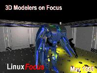

| Noticias Archivos Compañías Consejos |
LinuxFocus: Mayo 1998
|  |
Modeladores 3D para LinuxEn este número, LinuxFocus explora varias herramientas de modelado 3D disponibles para los usuarios de Linux. En contraste con OpenGL y POVRAY, los modeladores 3D se utilizan para diseñar objetos tridimensionales realistas con complejas geometrías y texturas. |
{kind=link}
[ Editorial | Buscando revisores | Tabla de contenidos | En números anteriores | Próximamente ]
|
Contenido
-
 MindsEye: Modelado en 3D por Martin van Velsen
MindsEye: Modelado en 3D por Martin van Velsen
Hace unos dos años nació un proyecto llamado MinsdEye. Su objetivo era crear un paquete de Modelado/Animación/Rendering para Linux/Unix capaz de competir en calidad con los grandes programas como 2D Studio Max o LightWave. Actualmente el desarrollo se está llevando a buen ritmo después de un duro inicio. Para la implementación del propio programa se están empleando técnicas de programación y diseño únicas e innovadoras.
- RenderMan por Carlos Calzada Grau
¿Quién no ha oído hablar de Pixar? ¿Quién no ha visto la película "Toy Story"? Pixar desarrolló RenderMan, un estándar. RenderMan permite a los modeladores especificar qué es lo que quieren dibujar pero no qué algoritmo se ha de utilizar, de forma que el modelado es independiente del método de dibujo (render). Aprende más sobre esta fantástica herramienta. - Microsoft Windows NT Server 4.0 versus
UNIX por John Kirch
El objetivo de este artículo es ofrecer a los gerentes de las empresas la información que necesitan para poder evaluar las opciones del mercado y tomar las decisiones correctas en lo relativo a la compra de material informático, tanto hardware como software. El artículo contiene detallada información basada en la experiencia de profesionales MIS.
- Real-Time Linux por Ismael Ripoll
El autor nos ofrece una visión en profundidad sobre el mundo de los sistemas operativos de Tiempo-Real. Los usuarios de Linux interesados en controlar sistemas físicos externos encontrarán especialmente útil esta nueva serie de artículos sobre Real-Time Linux.
- Creando una Versión (realmente útil) de
Linux por Mooneer
Salem
Sigue este artículo y aprenderás a crear tu propio juego de discos de arranque (root/boot) de Linux ¡Personaliza tus discos "root" con las herramientas que más necesites para el mantenimiento de tu sistema Linux!
- El lenguaje Postscript por Emre
Demiralp
Éste es el primero de una serie de artículos sobre PostScript. El principal objetivo no es enseñar todos los detalles de este lenguaje, sino presentar los conocimientos suficientes para que se vea a PostScript como un lenguaje de programación útil para la preparación de documentos. - GLUT: Utilizando Menús por Miguel Angel Sepúlveda
La serie de GL Utility Toolkit (GLUT) continua, esta vez examinando los menús de preación de interfaces mediante un sencillo ejemplo. Los menús de GLUT te permiten diseñar claros, compactos y portables GUIs (Graphical User Interfaces) para tus aplicaciones OpenGL.
-
OpenGL: La Escena 3D por
Miguel Angel Sepulveda
Explora todos los entresijos de trazado 3D con OpenGl, el autor presenta el primer ejemplo de animación en 3D de esta serie. Las directivas examinadas en este número están agrupadas en dos categorías: transformaciones geométricas en 3D y operaciones de proyección con matrices. - Introductión al SQL: Instalación de
PostgreSQL. por Manuel
Soriano
Este artículo es el primero de una serie de tres que conformarán un tutorial de SQL orientado a programadores principiantes de bases de datos. En esta primera parte abordan las generalidades de SQL y la instalación del paquete postgreSQL (un servidor de bases de datos de libre distribución).
- POVRAY: Nociones Básicas por Antonio Castro
En nuestro segundo artículo sobre POVRAY estudiamos algunas de las nociones básicas y comenzamos la descripción de los elementos básicos de este lenguaje.
- Escribiendo Texto con PhotoShop
por Juan Manuel Sepulveda
- Escribiendo Texto con Gimp por Phil Ross
En la sección de gráficos continuamos con la revisión y comparación de dos buenas herramientas de manipulación de imágenes: Photoshop y Gimp. Este mes nuestros colaboradores exploran la creación de carteles de texto. Algunas de las técnicas usadas normalmente para producir efectos especiales en texto han sido aplicadas con los dos programas. Es interesante destacar que las excelentes posibilidades que ofrece Gimp en el manejo del texto están a un nivel similar al de Adobe Photoshop, un producto comercial.
- Introducción al DNS (Domain Name Service) por Andreas J Gundacker
Artículo destinado a todos aquellos que estén interesados en los temas de la red de redes. Quizás te hayas preguntado alguna vez qué es lo que pasa dentro de Nestscape después de escribir una dirección URL. Este artículo te ayudará a entender el proceso de resolución de nombres.
-
El administrador de pantalla X (xdm) por Joel McCarty
El XDM (X Display Manager) se ejecuta como un demonio sobre una máquina y administra múltiples pantallas X (tanto remotas como locales) ofreciendo un mecanismo gestión de sesión de usuario similar al que ofrece init(8), getty(1) y login(1) para terminales orientadas al carácter. -
StarOffice for Linux
por Ismael Ripoll
Este artículo ofrece una visión global de todas las aplicaciones disponibles en la suite StarOffice 4.0. El autor hace un análisis en profundidad de la creación de presentaciones (algo muy parecido al Microsoft® PowerPoint, pero gratuito).
Modeladores 3D
Sección Hardware y Software
Sección del Núcleo
Sección de desarrollo
Sección de Gráficos
Administración de sistemas
Applicationes para Linux
Próximamente en tu revista amiga:
- Usando Expresiones Regulares por Guido Socher
¡Muestra tu Apoyo a LF!
Añade este icono en tu página y muestra tu apoyo por LinuxFocus y por el ideal de una revista libre multilingüe para la comunidad Linux.
Páginas web mantenidas por Miguel A Sepúlveda.